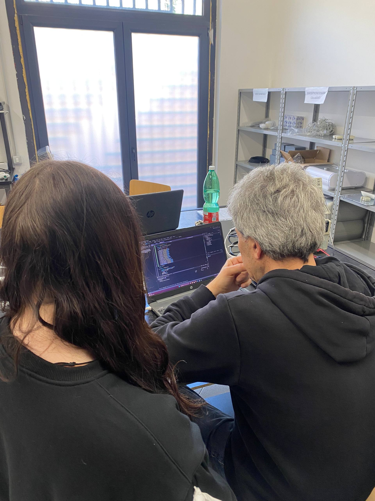
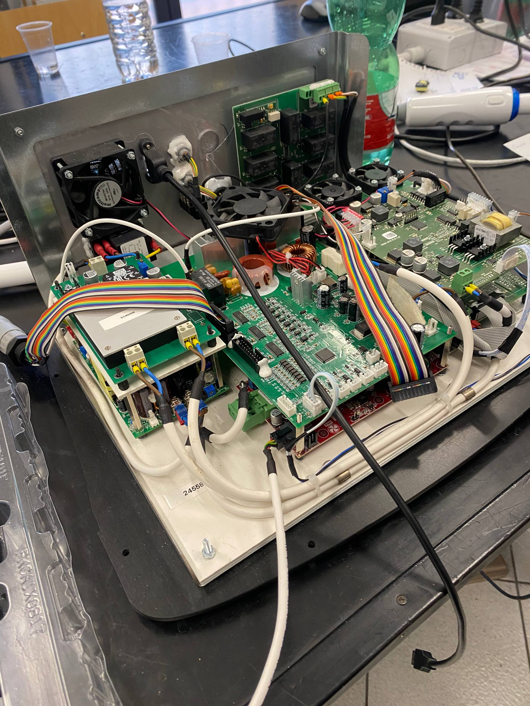

Durante il mio percorso scolastico ho svolto il PCTO presso CTM Technology, un’azienda che sviluppa macchinari per la cosmetologia, come dispositivi laser, anche per il mercato internazionale.
Durante questa esperienza ho lavorato con un informatico che mi ha insegnato le basi dello sviluppo software in C++.


Ho imparato a creare interfacce grafiche, come pulsanti e timer, e a collegarle al codice per farle funzionare.
È stata un’esperienza molto utile perché mi ha permesso di vedere come si lavora davvero nel settore informatico.